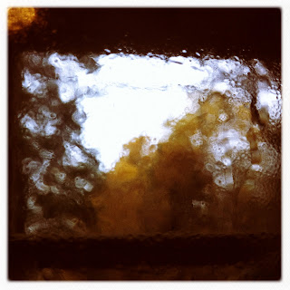

Recovered weblog entry
Steamed kitchen glass

The effect of a warm kitchen on chilly autumn glass made me pause yesterday and take notice. The sights, the smells, the entire environment was on point; nothing could be improved. The yellowing Ash behind the cabin was only a whisper. An overcast sky blanketed the village, prescribing rest and affection. Thanksgiving is rapidly becoming my favorite holiday.Lens: James M
Film: Ina's 1935